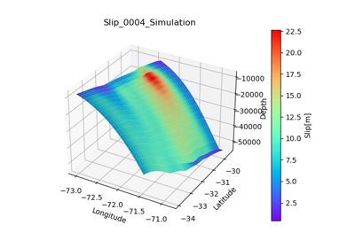
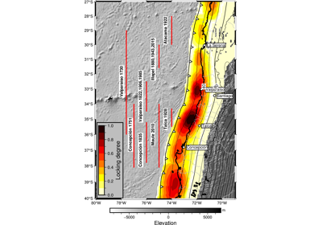
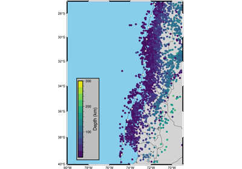
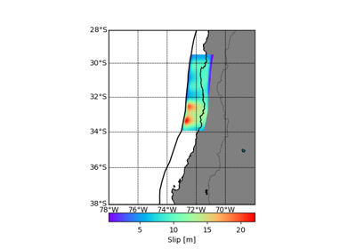
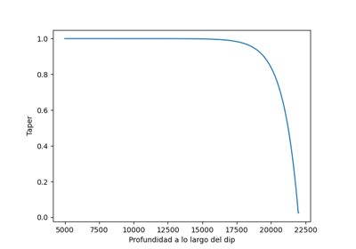
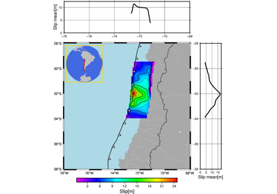
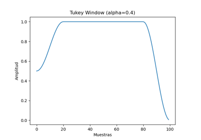

Stochastic process Gallery 📖 📈 🌎
Below is a gallery of examples

3D Slip Figure of a Stochastic generation
3D Slip Figure of a Stochastic generation

Coupling figure - 2D Fault

Seismicity Chile 2011-2024

Slip and deformation figure of a Stochastic generation
Slip and deformation figure of a Stochastic generation

Stochastic Slip generation - 1D Fault
Stochastic Slip generation - 1D Fault

Stochastic Slip generation - 2D Fault
Stochastic Slip generation - 2D Fault

Tukey Filter - 2D Fault